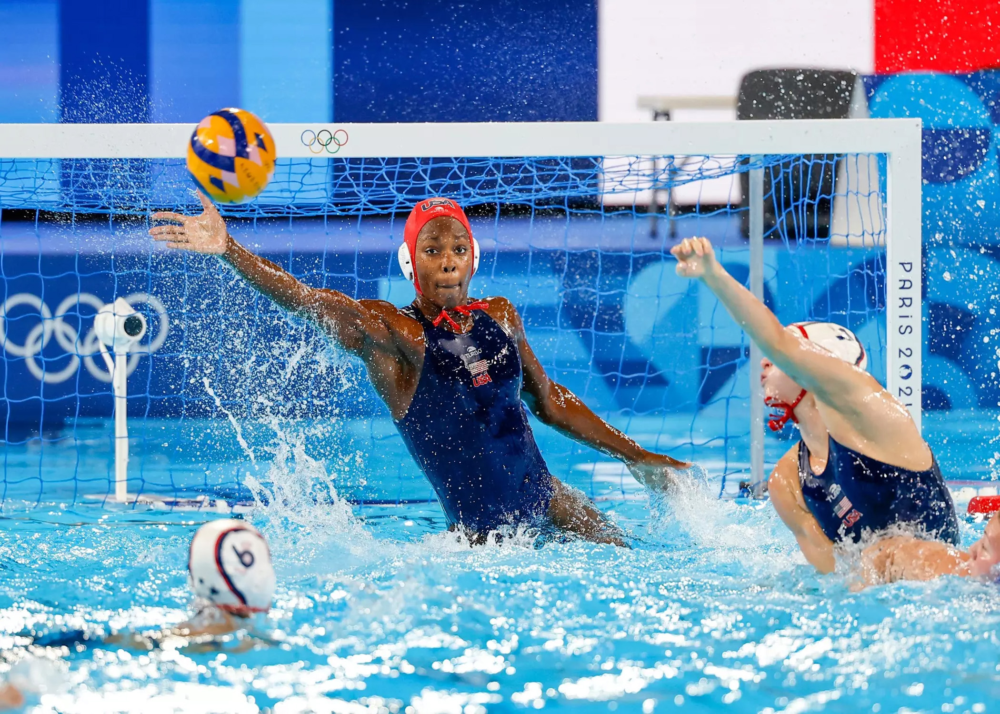
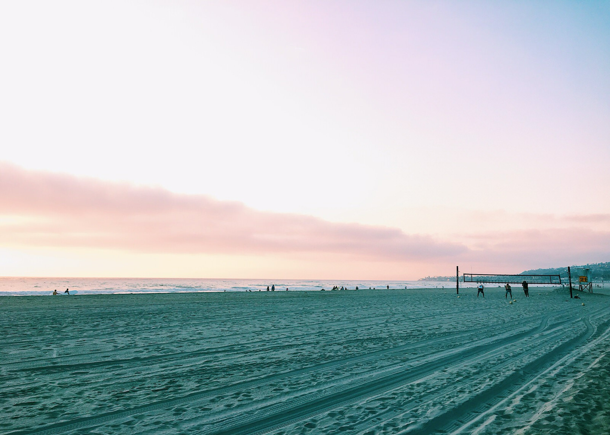

I wrote short paragraphs about me and put pictures to go with them. The pictures have to do with the paragraphs that are next to them. I also resized the pictures so that they were all the same size and so they could fit on my page. I embedded a youtube video and rounded the edges of the pictures I put in and changed the border color and rotated them. My nav buttons are styled with my CSS. And I put a link relevant to one of my interests at the bottom of the page.
Last year I was a graphic design student, and I learned a lot about creating visuals, using colors, and making projects look creative and interesting. This year I’m taking web design, and I think it’s really cool to see how design can actually work on websites and not just stay on paper. I like learning new skills that help me grow and make my designs look more professional and creative. It’s fun to see how graphic design and web design connect together and how they can both be used in different ways.

I play water polo, and it’s one of my favorite sports because it keeps me active while also challenging me to always do my best. It takes a lot of teamwork, energy, and communication in the pool, but I really enjoy working with my teammates and pushing myself during games. Being in the water and competing is exciting because it feels different from other sports and gives me a chance to use both strength and strategy. Playing water polo also helps me stay strong, focused, and motivated to keep improving every season.

I like hanging out with my friends and family at the beach because it’s always really fun and relaxing, and it gives me a chance to spend time with the people I care about. Sometimes we all sit together and watch the sunset, and it always looks so colorful and pretty over the ocean. We also like to go swimming in the waves, which is exciting because the water can be calm one moment and super strong the next. Another thing we do is go body surfing, and it’s always a blast trying to catch the waves and ride them as far as we can.
Copyright © 2025 Elea Hustler